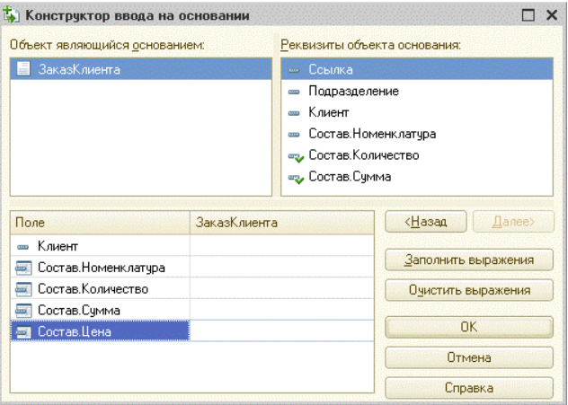
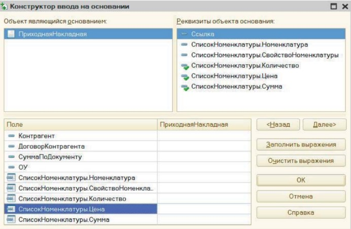
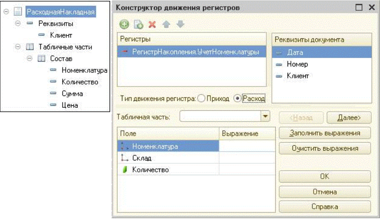
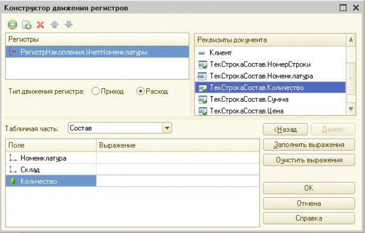
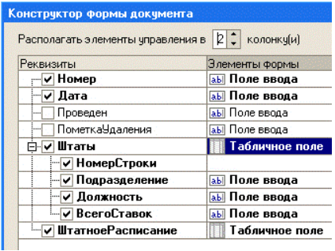
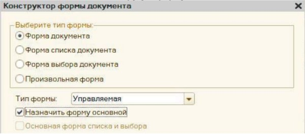
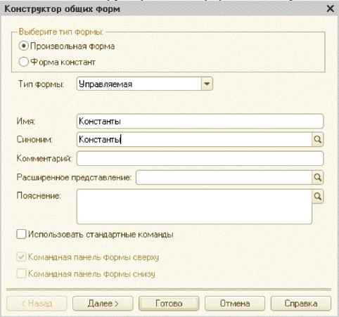
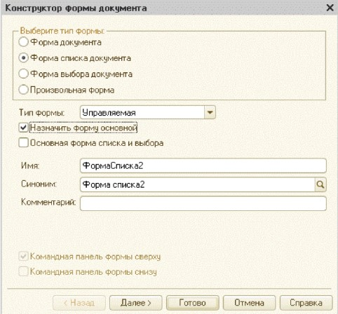

1 Конструктор макета можно использовать:
2 Для открытия окна конструктора макета необходимо
3 Макет какого типа может быть создан конструктором макетов?
4 Какие данные может содержать макет, созданный конструктором макетов?
5 При работе с конструктором макета необходимо выполнять загрузку из файла при работе с типами макета:
6 Выбор в конструкторе макетов типа "Табличный
документ"...
7 Для чего предназначен конструктор печати?
8 Если в конструкторе печати указано имя процедуры, которая будет выполнять построение печатной формы, и такая процедура уже
присутствует в модуле
9 Назовите инструмент визуального создания алгоритма заполнения объекта "на основании" и основное место его вызова?
10 Назовите основное назначение конструктора ввода документа "на основании"
11 Можно ли формулу заполнения поля "Состав.Цена" задать произвольным выражением?

12 Если процедура с именем "ОбработкаЗаполнения" уже определена в модуле документа, то возможно ли в этом случае использование
конструктора ввода основании?
13 Какое предназначение имеет выделение "галочками" элементов списка "Реквизиты объекта основания"?

14 Назовите инструмент визуального создания алгоритма проведения документа и основное место его вызова
15 Назовите основное назначение конструктора движений документа
16 Можно ли произвести автозаполнение выражений и, если "да", то какими действиями?

17 Процедуру с каким именем и в каком контексте определяет конструктор движений документа?
18 Если процедура с именем "ОбработкаПроведения" уже определена в модуле документа, то возможно ли в этом случае использование конструктора движений?
19 Можно ли значение ресурса "Количество" задать произвольным выражением?

20 Конструктор форматной строки используется для составления текста форматной строки данных:
21 Конструктор форматной строки
22 Для откры тия окна конструктора форматной строки необходимо...
23 Форматная строка, сформированная в палитре свойств
элемента управления формы при помощи конструктора форматной
строки...
24 Каким образом можно задать текст надписей для элементов управления на выбранном языке?
25 Конструктор строк на разных языках может использоваться для...
26 Для откры тия окна конструктора строк на разных языках необходимо:
27 Количество языков для конструктора строк на разных языках
28 При построении формы конструктором с показанными на рисунке настройками:

29 Конструктор форм предназначен для:
30 Как можно вызвать конструктор форм объектов конфигурации?
31 При создании формы конструктором формы был установлен флажок "Назначить форму основной". После сохранения этой формы можно ли будет назначить основной другую форму?

32 При создании формы конструктором формы количество
размещаемых на форме командных панелей:
33
После нажатия на кнопку "Далее", в соответствии с рисунком, на второй
закладке конструктора общих форм можно будет:

34 Конструктор формы списка справочника на закладке "Далее"...
35 Конструктор формы списка иерархического справочника при указании размещения дерева...
36 Можно ли в конструкторе формы элемента справочника на втором шаге (кнопка "Далее") указать размещение табличного поля,
содержащего данные подчиненного справочника?
37 Можно ли в конструкторе формы документа на втором шаге (кнопка "Далее") указать размещение табличного поля, содержащего
данные до- кумента, на основании которого введен данный документ?
38 Можно ли в конструкторе формы документа на втором шаге (кнопка "Далее") указать размещение табличного поля, содержащего
данные регистра, для которого данный документ может являться
регистратором?
39 В конструкторе управляемой формы документа при необходимости нестандартного размещения элементов формы:
40 У документа уже определены все основные формы. При создании новой формы в конструкторе выставляют следующие флажки (см.
рисунок). Что произойдет после того, как форма будет создана?

41 Использование конструктора запросов позволяет:
42 Использование конструктора запроса с обработкой результата позволяет:
43 При сохранении текста запроса, откры того повторно с помощью конструктора запроса, без внесения в этот текст изменений:
44 Конструктор запросов может бы ть вызван:
45 Кем может использоваться конструктор запросов?
46 На закладке "Таблицы и поля" конструктора запросов задают:
47 Для создания в конструкторе запросов вложенного запроса необходимо:
48 Для создания в конструкторе запросов вычисляемого поля необходимо
49 Для создания в запросе строк, сгруппированных с помощью агрегатных функций, на закладке "Группировка" конструктора запросов обязательно должны быть заполнены:
50 В конструкторе запросов условия на значения агрегатных функций можно накладывать:
51 В конструкторе ограничений доступа к данным:
52 При определении ограничения доступа в конструкторе
ограничений доступа к данным...
53 При определении ограничения доступа в конструкторе
ограничений доступа к данным:
54 При определении ограничения доступа в конструкторе
ограничений доступа к данным текст условия:
55 Конструктор агрегатов предназначен для формирования агрегатов:
56 Конструктор агрегатов может быть вызван:
57 Если для регистра накопления недоступен конструктор агрегатов, необходимо выполнить следующие действия:
58 Для отображения в конструкторе списка оптимальных агрегатов необходимо:
59 Для определения схемы источника данных в системе компоновки данных используется:
60 В схеме компоновки данных источник определяется:
61 Данные для источников в системе компоновки данных могут браться из:
62 Запрос для системы компоновки данных необходимо определять:
63 Конструктор настроек компоновки данных позволяет:
64 Конструктор настроек компоновки данных позволяет настроить вывод информации в виде:
65 Конструктор настроек компоновки данных доступен:
66 Конструктор макета оформления компоновки данных
используется для:
67 Конструктор макета оформления компоновки данных открывается:
68 Шаблоны текста задаются для:
69 Шаблоны текста определены:
70 Шаблоны текста могут использоваться: